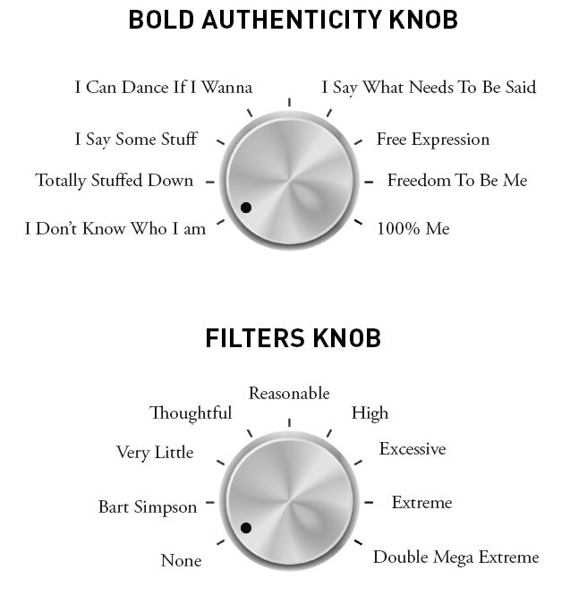

Did anyone ever tell you when you were a kid to “grow up”? Or maybe you heard it as a teenager, or even last week. Grow up. Be more mature, more responsible. Depending on the context this often really means: stop what you're doing and obey me, or, don’t focus on what you want, focus on my needs right now.
In any case, “growing up” just might be part of the problem. Because when you were a kid you had absolutely no problems being fully yourself. When you were three, four or five, if you wanted to talk to someone, you did. Even if they were a stranger or a homeless person that adults avoided. When you wanted to say something, you did. You shared things and told stories, assuming everyone would be interested, because your stories were awesome. If the other person wasn't paying attention, you'd shout, “Hey! Listen to me!”
If you felt shy or didn't want to talk to someone, you'd turn away, or retreat. You wouldn't answer questions they asked you. You might have even simply said, “I don’t like you.”
If you wanted to dance, you danced. Crazy, wonky, uncoordinated, unbridled, joyful, wacky dance moves. All over the place. To the joy, amusement, and delight of all adults around. They smiled as their spirit longed to be able to move so freely, without self-consciousness or regard for others’ opinions.
If you observe young children, you'll see all this and more. I'll never forget one fascinating interaction between two young girls at my wife's extended family’s house. We were out in the dry desert landscape of Eastern Washington in the late spring. The sky was bright blue and my (future) wife Candace and I were sitting on a blanket, reveling in the warm sunshine.
Around us was a gaggle of little kids. The young boys were running around the property, engaged in extended and elaborate Nerf warfare. The little girls were closer to the blanket, playing with various dolls, tea party sets, and whatnot.
Here was the interaction I'll never forget. One little girl kept putting a doll in another girl’s face so the doll could dance around and tell her something. Eventually the girl got sick of a doll in her face and yelled, “Stop putting that doll in my face!”
Without missing a beat, the first girl responded, “If you don’t like the doll in your face, move your face then!”
It’s the kind of thing that could happen hundreds of times in a play session between small children. It’s the kind of thing that most people wouldn’t even notice or think twice about. But to me, someone who has spent years studying how to be more assertive and helping others do the same, I was in awe.
So much uninhibited, simple expressiveness. One girl is doing what she wants to do, and the other one doesn’t like it and tells her so, right away. No stuffing, no guilt, no questioning and hesitating and ruminating about the “best” way to say it. She just blurts it out. In response, the second girl fires back. She says whatever comes to her mind. No guilt, no feeling terrible because she did something that another person didn’t like, no self-loathing, social anxiety, or fear of losing the relationship.
Obviously, as we get older and more mature, we need to learn some measure of restraint. We don’t say everything that comes to our minds, and we find more tactful and skillful ways to assert ourselves. However, in the vast majority of recovering nice people (myself included), we can spend way too much energy on saying things “just right.” We have so many ideas about whether it’s OK to speak up at all, how we should say something if we do choose to speak up, and how the other person should not have any negative reaction to us. We have that initial impulse to blurt something out and it travels through this complex mental algorithm of what’s right, what’s “nice,” and either nothing comes out at all, or it’s some heavily manipulated communication designed to be polite and acceptable to all. What comes out is often not us. And, as you remember, feeling like we cannot be ourselves is one of the greatest forms of human suffering.
So what am I suggesting? That we should chuck all our filters and just go back to being like little kids? Saying whatever we want, doing whatever we want, all the time? This notion was captured brilliantly in one of the early episodes of The Simpsons , in which a popular psychologist visits the town of Springfield to do a seminar. During the seminar, he is repeatedly interrupted by the unfiltered comments of Bart Simpson, much to Homer and Marge’s embarrassment. Instead of being upset, however, the psychologist praises Bart for his boldness and uses him as an example. He gets everyone in the audience chanting, “Be like the boy!”, encouraging them to run free, follow their impulses, and release the shackles of repression and restraint. The town is invigorated and everyone starts having more fun. However, within a short period of time, people stop going to work, carrying out their responsibilities, and the entire town falls apart.
No, you don’t need to “Be like the boy!” We don’t need to throw away all of our conditioning and what we learned to be self-aware, kind, attentive, and empathic people. But we may want to fiddle with the knobs a bit. We may want to turn down the filter knob from the “excessive” or “extreme” range towards “thoughtful” or “reasonable.”
We may want to turn up the bold authenticity knob from “totally stuffed down” to “I say what needs to be said” or “I can dance if I wanna.”

What dial are each of these knobs set to for you currently? Have the settings changed at all since you started reading this book? Obviously, you can change out the words and phrases on these dials for ones that speak to you. The key here is to give yourself permission to be you. To turn down the filters that hold you back, and to turn up the bold, free, expression of who you are. As you do this, you will experience an increase in self-esteem, happiness, and freedom. This is because you will be aligning with the real you, that version of yourself that was there when you were six years old, and that gives you energy and power. You being fully you, with complete permission and enjoyment, is as good as it gets.